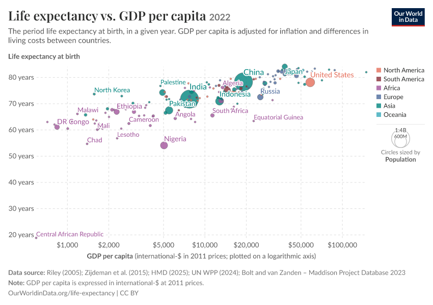

Life expectancy vs. GDP per capita 2022
The period life expectancy at birth, in a given year. GDP per capita is adjusted for inflation and differences in living costs between countries.
Our World
in Data
SELECT
Visual reverse-engineering study
Rebuilt from observation, then extended through interaction.
This page is an independent HTML/CSS/JavaScript recreation of an Our World in Data visualization. It does not embed or iframe the original.
Compare with the original screenshot
